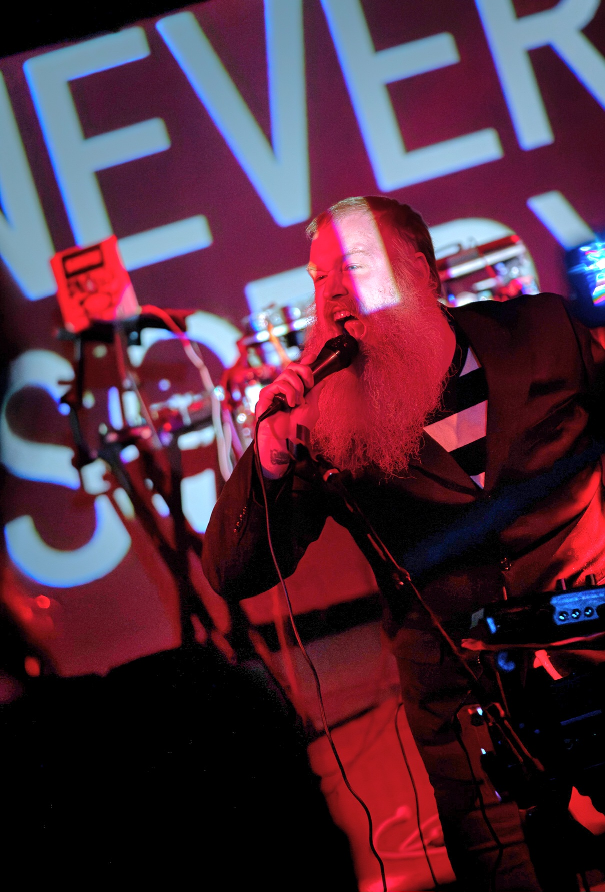

NEVER SORRY

https://wavescrashingpianochords.bandcamp.com/
Channeling the taboo raunchiness of old truck stop party tapes (à la
Gene Tracy) with classic feedback-heavy power electronics,
NEVER SORRY (ex-Waves Crashing Piano Chords) transcends tongue-in-cheek with sleazily told tales of adolescent lust and adult codependence accompanied by
dashing good looks and an EDP Wasp synthesizer.
NEVER SORRY (ex-Waves Crashing Piano Chords) transcends tongue-in-cheek with sleazily told tales of adolescent lust and adult codependence accompanied by
dashing good looks and an EDP Wasp synthesizer.